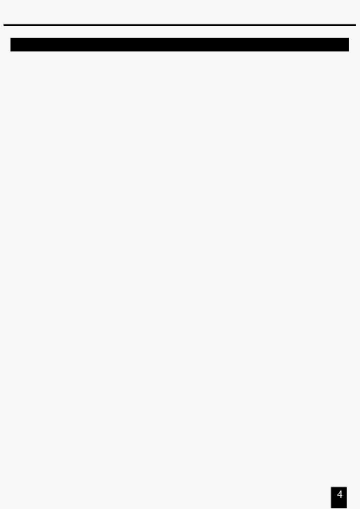

1. Короткий огляд
1.1 Передня панель
1. Індикатори A
Показують поточний рівень яскравості відповідного
пронумерованого каналу від 1 до 24.
2.
Повзунки каналів 1-24
Ці 24 повзунка використовуються для керування й/або програмування
інтенсивності каналів 1-24.
3.
Кнопки Flash 1-24
Ці 24 кнопки використаються для задання повного рівня яскравості
(СПАЛАХ) індивідуально для кожного каналу 1-24.
4. Індикатори В
Показують поточний рівень яскравості відповідного
пронумерованого каналу від 25 до 48.
5.
Індикатори сцен (SCENE) Світяться, коли відповідні сцени активні.
6. Повзунки каналів 25-48
Ці 24 повзунка використовуються для керування й/або програмування
інтенсивності каналів 25-48.
7.
Кнопки Flash 25-48
Ці 24 кнопки використовуються для задання повного рівня яскравості
(СПАЛАХ) індивідуально для кожного каналу 25-48.
8.
Кнопка Dark
Ця кнопка використовується для миттєвого затемнення всіх виходів.
9.
Кнопка Down/Beat Rev
DOWN функція для модифікації сцени в режимі редагування;
BEAT REV використовується для зворотного напрямку виконання
програми ефекту з постійним тактом.
10.
Кнопка Кожне натискання активує режим роботи в наступному порядку:
Mode Select/Rec Speed CHNS /SCENES, Double Preset й Single Preset.
Rec Speed: Установка швидкості виконання будь-якої програми
виконуваної в режимі мікширування (Mix mode).
11.
Кнопка Up/Chase Rev
Up використовується для модифікації сцени в режимі редагування.
Chase Rev для зміни напрямку виконання сцени під управлінням
повзунка швидкості (Speed Slider).
12.
Кнопка Сторінка
Натискання вибирає сцени зі сторінок 1-4.
13. Кнопка Delete/ Rev One Видаляє будь-який крок зі сцени або змінює напрямок виконання
.. будь-якої програми.
14.
Цифровий Дисплей
Показує поточний режим роботи або стан програмування.
15.
Кнопка
Збільшення – це додавання одного кроку або кроків у сцені.
Insert / % or 0-255 % або 0-255 використовуються для зміни відображуваної на дисплеї
величини або в %, або в цифрах 0-255.